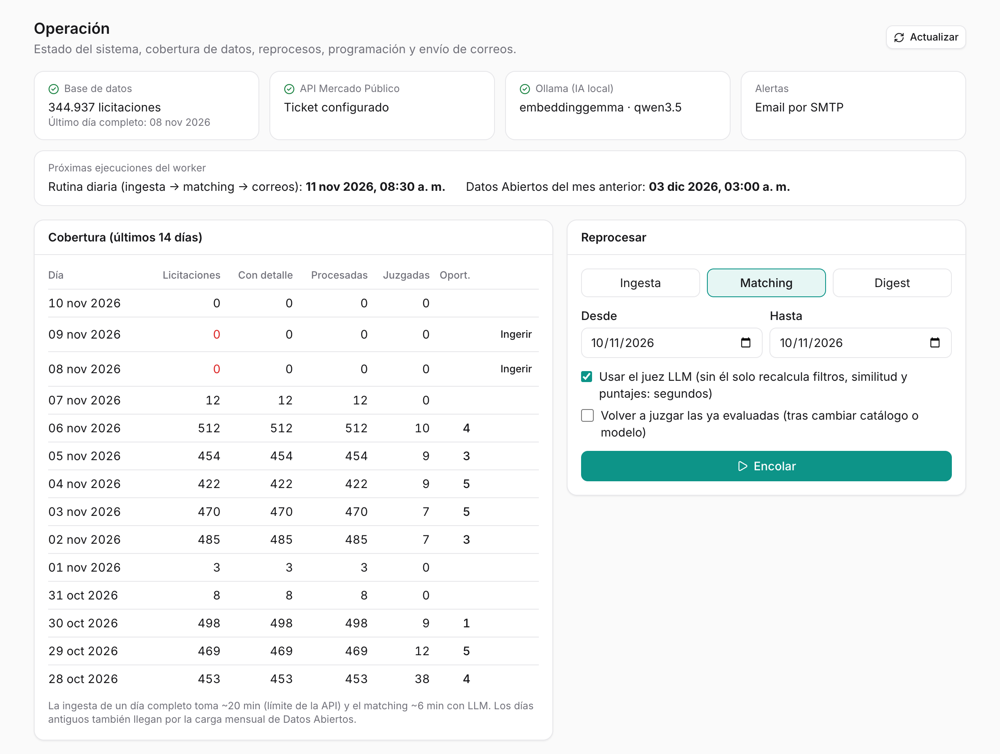
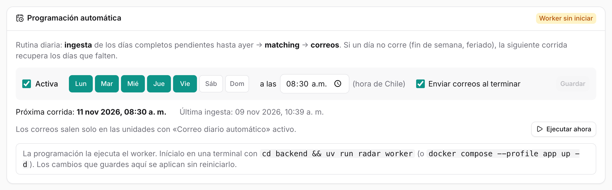
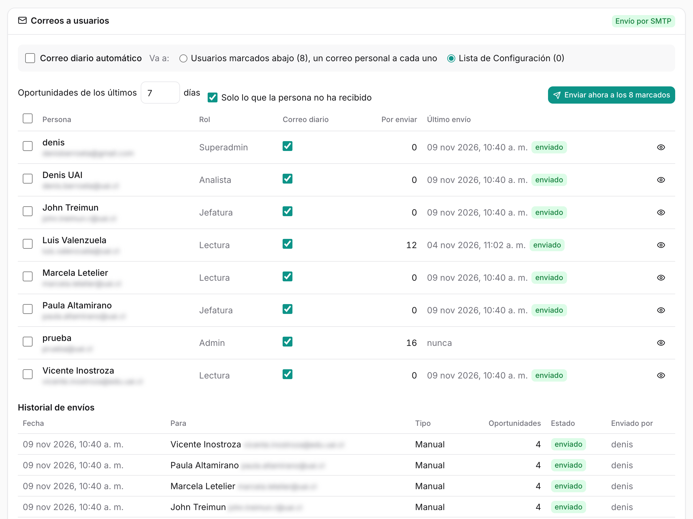
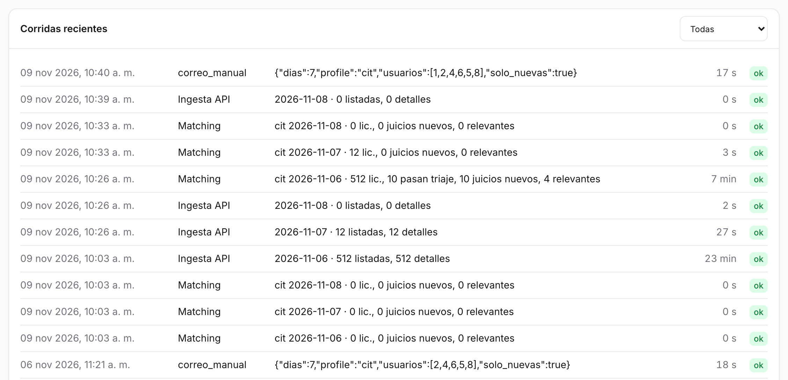

18 Operación
Operación es la sala de máquinas: muestra si todo funciona, qué días están completos, qué se está ejecutando, cuándo corre sola la rutina diaria y a quién le llegan los correos. Disponible para el rol admin. Es una sola página, de arriba hacia abajo; el botón Actualizar vuelve a consultar el estado.

18.1 Qué hay en la pantalla
18.1.1 Estado
Cuatro tarjetas con un ✓ verde o una ✗ roja, y debajo una franja con las próximas ejecuciones del worker. La tarjeta de base de datos muestra además cuántas licitaciones hay guardadas (342.073 al 30 de octubre) y el último día completo.
| Tarjeta | Qué revisa | Si falla |
|---|---|---|
| Base de datos | Conexión a PostgreSQL | docker compose up -d db |
| API Mercado Público | Que exista el ticket | Completar MERCADO_PUBLICO_TICKET en .env |
| Ollama (IA local) | Que Ollama responda y estén los modelos | Abrir Ollama; ollama pull … |
| Alertas | Canal de correo | Sin SMTP ni API de correo, los correos se guardan como .eml |
| Próximas ejecuciones (franja) | Cuándo corre la rutina diaria y la carga de Datos Abiertos | Ver Programación automática |
18.1.2 Cobertura
La tabla de los últimos 14 días muestra, para cada día: licitaciones descargadas, cuántas tienen ficha completa (con detalle), cuántas se procesaron, cuántas juzgó el juez y cuántas oportunidades resultaron. Lo incompleto se pinta en naranja o rojo, y al lado aparece el botón para arreglarlo:
- Ingerir, si el día no tiene licitaciones o le faltan fichas.
- Matching, si están descargadas pero no procesadas.
El día de hoy nunca se marca como incompleto, porque todavía no termina.
18.1.3 Reprocesar
Un formulario para ejecutar a mano cualquiera de las tres etapas:
| Tipo | Opciones |
|---|---|
| Ingesta | Rango de fechas; Volver a descargar detalles ya guardados |
| Matching | Rango de fechas; Usar el juez LLM (sin él solo recalcula filtros, similitud y puntajes, en segundos); Volver a juzgar las ya evaluadas (tras cambiar el catálogo o el modelo) |
| Digest | Enviar aunque las alertas estén desactivadas |
Encolar lo agrega a la cola, que aparece debajo con el estado de cada trabajo (en cola, corriendo, ok o error). Los trabajos se ejecutan de a uno y usan exactamente el mismo código que la rutina automática.
18.1.4 Programación automática

Define qué días y a qué hora corre sola la rutina diaria: ingesta de los días completos pendientes hasta ayer → matching → correos. Si un día no corre (fin de semana, feriado), la siguiente corrida recupera los días que falten, hasta 14.
- Activa, los días de la semana y la hora (de Chile). Por defecto, de lunes a viernes a las 08:30.
- Enviar correos al terminar: los correos salen solo en las unidades con Correo diario automático activo.
- Próxima corrida y última ingesta.
- Ejecutar ahora: pone la rutina completa en la cola.
- Arriba a la derecha, si el worker está activo, detenido (desde cuándo) o sin iniciar. Los cambios se aplican sin reiniciarlo.
Además del trabajo diario, el worker carga el día 3 de cada mes los Datos Abiertos del mes anterior (Ingest).
18.1.5 Correos a usuarios

Coordina el correo personal: cada persona recibe su propio correo, sin las licitaciones que ya recibió.
- Correo diario automático: si sale con la rutina. Va a: los usuarios marcados abajo (un correo personal a cada uno) o la lista fija de Configuración.
- La tabla de personas de la unidad: rol, la casilla Correo diario, cuántas oportunidades por enviar tiene, su último envío con su estado y el ojo para ver la vista previa de su correo. Las personas dadas de baja aparecen atenuadas.
- Oportunidades de los últimos N días y Solo lo que la persona no ha recibido: definen qué entra en un envío manual.
- Enviar ahora: a los seleccionados o, si no hay selección, a los marcados. Pide confirmación y advierte si no hay canal configurado.
- Historial de envíos: fecha, destinatario, tipo (manual o automático), cuántas oportunidades, estado (enviado o guardado .eml) y quién lo envió.
Un correo guardado como .eml no llegó a nadie, así que no cuenta como recibido: la persona lo volverá a recibir cuando haya canal.
18.1.6 Corridas recientes

El historial de ejecuciones (ingesta, Datos Abiertos, matching, digest) con su estado, duración, estadísticas y el error si lo hubo. Se guarda en la tabla ingest_run.
Una ingesta de un día hábil toma unos 20 minutos, porque pide la ficha de cada licitación por separado. Mientras corre, su fila muestra el avance: primero «pidiendo listado…» y luego cuántas listó y cuántas fichas lleva, con una estimación de lo que falta (por ejemplo, «detalles 246/498 (~10 min)») y el tiempo transcurrido.
18.2 Cómo funciona la operación automática
La operación tolera fallas parciales: si los modelos de IA no responden, el matching se marca con error pero las licitaciones descargadas quedan guardadas, y basta reprocesar el día cuando el problema se resuelve.
18.3 Cómo se hace
18.3.1 Completar un día que falta
- En Cobertura, buscar el día en rojo o naranja.
- Presionar Ingerir o Matching en su fila.
- Seguir el avance en la cola y, al terminar, en Corridas recientes.
Desde la línea de comandos:
uv run radar ingest --date 2026-10-20 --until 2026-10-24 # completar días faltantes18.3.2 Volver a juzgar después de cambiar el catálogo
- En Reprocesar, elegir Matching y el rango de fechas.
- Marcar Usar el juez LLM y Volver a juzgar las ya evaluadas.
- Encolar. Cada licitación juzgada toma unos 13 segundos.
uv run radar match --date 2026-10-28 --rejudge # volver a juzgar
uv run radar match --date 2026-10-28 --retriage # volver a triar con otro modelo18.3.3 Cambiar el horario de la rutina
- En Programación automática, elegir los días y la hora.
- Guardar. La próxima corrida se actualiza sin reiniciar el worker.
18.3.4 Activar el correo personal
- Configurar un canal de envío en
.env:SMTP_*, o una API de correo por HTTPS (MAIL_PROVIDER= Brevo o Resend, yMAIL_API_KEY) si la red bloquea SMTP. - Crear las personas en Usuarios.
- En Correos a usuarios, marcar Correo diario para cada una y revisar su vista previa con el ojo.
- Elegir Va a: usuarios marcados y activar Correo diario automático.
- En Programación automática, dejar activo Enviar correos al terminar.
18.3.5 Si algo falla
| Síntoma | Causa probable | Solución |
|---|---|---|
| «No se pudo cargar la bandeja» | La API no está corriendo | cd backend && uv run radar serve |
Error de conexión a localhost:5432 |
Docker o la base de datos apagados | docker compose up -d db |
| «Modelo de embeddings no disponible» | Ollama apagado o falta un modelo | Abrir Ollama; ollama pull embeddinggemma |
| Muchos rechazos (429) al descargar | Límite de la API de Mercado Público | Aumentar MP_MIN_INTERVAL_S en .env |
| La API falla tras actualizar el código | Faltan cambios en la base de datos | cd backend && uv run alembic upgrade head |
| «Worker sin iniciar» o «detenido» | El proceso del worker no corre | cd backend && uv run radar worker |
| Correos «guardado .eml» | No hay canal de envío | Configurar SMTP_* o MAIL_PROVIDER |
El script scripts/estado.sh muestra qué componentes están funcionando.
18.4 Puesta en marcha
18.4.1 Requisitos
- Docker Desktop, para la base de datos.
uv(Python 3.13) y Node 22 o superior.- Ollama instalado en macOS (no en Docker, para que use la GPU) con los modelos
embeddinggemma,qwen3.5ynimble:latest. - Un ticket de acceso a la API de Mercado Público.
18.4.2 Primera vez
cp .env.example .env # completar MERCADO_PUBLICO_TICKET y el canal de correo
docker compose up -d db
cd backend && uv sync
uv run alembic upgrade head
uv run radar catalog load catalogs/cit.yaml
uv run radar users add ana@uai.cl --username ana --password --superadmin
cd ../frontend && npm install18.4.3 Cada día
Cada proceso en su propia terminal, desde la raíz del repositorio:
docker compose up -d db # base de datos
open -a Ollama # modelos de IA
cd backend && uv run radar serve # API
cd frontend && npm run dev # web
cd backend && uv run radar worker # tareas programadasTambién se puede levantar todo con docker compose --profile app up -d --build (Ollama sigue fuera de Docker).
¿Necesita internet? Solo para descargar licitaciones, enviar correos e instalar. Los modelos, la bandeja y el análisis funcionan sin conexión.
18.5 Bitácora
| Fecha | Cambio | Commit |
|---|---|---|
| 28-oct-2026 | Worker con APScheduler: recuperación diaria a las 06:00 (hasta 14 días pendientes) y Datos Abiertos el día 3 de cada mes. Perfil app de Docker Compose. |
e5fbcaa |
| 28-oct-2026 | El worker ejecuta el matching después de la ingesta diaria. | 77f0a42 |
| 29-oct-2026 | Pantalla Operación: estado, cobertura con arreglos rápidos, formulario de reproceso, cola y corridas recientes. El matching y el correo quedan registrados en ingest_run. |
12887b1 |
| 30-oct-2026 | Operación exige rol admin. | 263246a |
| 30-oct-2026 | Tarjeta Correos a usuarios: correo personal por persona, vista previa, envío manual e historial. Envío por SMTP o por API HTTPS (Brevo o Resend). | e91361d |
| 30-oct-2026 | Primeros envíos reales: a las 18:45 dos correos de prueba quedaron como .eml; a las 23:18, con SMTP configurado, llegaron a sus casillas con 25 oportunidades cada uno. |
— |
| 30-oct-2026 | Tarjeta Programación automática: días y hora configurables desde la web, guardados en la base de datos (app_setting), estado del worker y Ejecutar ahora. La hora deja de ser fija (06:00); por defecto, de lunes a viernes a las 08:30. El worker relee la programación cada minuto. |
9a27648 |
| 03-nov-2026 | La ingesta guarda su avance cada 10 fichas y Corridas recientes lo muestra mientras corre, con una estimación del tiempo que falta. Antes solo escribía sus cifras al final y parecía detenida. | 5713579 |
| 06-nov-2026 | Entre las 11:18 y las 11:20 fallaron diez intentos de envío a cinco personas; el envío de las 11:21 llegó a todas. | — |
| 09-nov-2026 | Versión 1: archivos para correr la plataforma en el servidor gpu-box (compose propio, Makefile, respaldos y migración de la base) y nginx endurecido para exponer la web: límite de 5 intentos de inicio de sesión por minuto, documentación de la API oculta y cabeceras de seguridad. |
c385e39, f095ae1 |